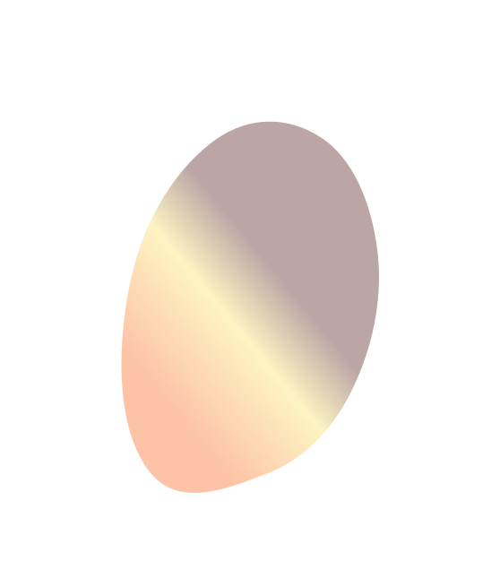

<section class="workflow">
    <div class="inner">
        <span class="section-counter">01/06</span>
        <h2 class="workflow__title">Воркфлоу</h2>
        <!-- Tabs -->
        <div class="tabs">
            <picture>
                <source media="(max-width: 600px)" srcset="../img/workflow/blur-workflow-mobile.svg">
                
            </picture>
            <div class="tabs__header">
                <div class="tabs__header-navigation">
                    <ul class="tabs__header-list">
                        <li class="tabs__header-item list__item active">
                            <span class="tabs__header-number">1</span>
                            <h3 class="tabs__header-caption">Аналіз</h3>
                        </li>
                        <li class="tabs__header-item list__item">
                            <span class="tabs__header-number">2</span>
                            <h3 class="tabs__header-caption">Проектування</h3>
                        </li>
                        </li>
                        <li class="tabs__header-item list__item">
                            <span class="tabs__header-number">3</span>
                            <h3 class="tabs__header-caption">Дизайн</h3>
                        </li>
                        <li class="tabs__header-item list__item">
                            <span class="tabs__header-number">4</span>
                            <h3 class="tabs__header-caption">Розробка</h3>
                        </li>
                        <li class="tabs__header-item list__item">
                            <span class="tabs__header-number">5</span>
                            <h3 class="tabs__header-caption">Тестування</h3>
                        </li>
                        <li class="tabs__header-item list__item">
                            <span class="tabs__header-number">6</span>
                            <h3 class="tabs__header-caption">Запуск та підтримка</h3>
                        </li>
                        <div class="tabs__header-indicator"></div>
                    </ul>
                </div>
            </div>
            <div class="tabs__content">
                <div class="tabs__content-item">
                    <div class="tabs__content-container-icon">
                        
                    </div>
                    <div class="tabs__content-wrapper">
                        <strong class="tabs__content-title">Аналіз</strong>
                        <p class="tabs__content-text">Проект починається із стадії аналізу, під час якого учасники
                            процесу обговорюють вимоги, що висуваються до кінцевого продукту. Мета ціє стадії –
                            визначення детальних вимог до системи.</p>

                        <p class="tabs__content-text">Таким чином, цей етап передбачає збір вимог до програмного
                            забезпечення, що розробляється,
                            їх систематизацію, документування, аналіз, а також виявлення та вирішення протиріч.</p>
                    </div>
                </div>
                <div class="tabs__content-item">
                    <div class="tabs__content-container-icon">
                        
                    </div>
                    <div class="tabs__content-wrapper">
                        <strong class="tabs__content-title">Проектування</strong>
                        <p class="tabs__content-text">На стадії проектування (яка також називається стадією дизайну та
                            архітектури) програмісти та системні архітектори, керуючись вимогами, розробляють
                            високорівневий дизайн системи.</p>
                        <p class="tabs__content-text">
                            Основі способи візуалізації під час проектування: </p>
                        <ul class="tabs__content-list">
                            <li>Блок-схеми;</li>
                            <li>ER-діаграми;</li>
                            <li>UML-діаграми;</li>
                            <li>Макети</li>
                        </ul>
                    </div>
                </div>
                <div class="tabs__content-item">
                    <div class="tabs__content-container-icon">
                        
                    </div>
                    <div class="tabs__content-wrapper">
                        <strong class="tabs__content-title">Дизайн</strong>
                        <p class="tabs__content-text">Розробка та візуалізація UX (user experience) та інформаційної
                            архітектури, створення CJM та навігаційних діаграм. На цьому етапі створюється прототип та
                            після його затвердження починається детальна робота над UI (user interface). Також, за
                            потреби розробляється дизайн система, брендбук або Style-guide.</p>
                        <p class="tabs__content-text">Результатом етапу дизайну є завершений та прототипований макет
                            продукту</p>
                    </div>
                </div>
                <div class="tabs__content-item">
                    <div class="tabs__content-container-icon">
                        
                    </div>
                    <div class="tabs__content-wrapper">
                        <strong class="tabs__content-title">Розробка</strong>
                        <p class="tabs__content-text">Після того як вимоги і дизайн продукту затверджені, відбувається
                            перехід до наступної стадії життєвого циклу – безпосередньої розробки.</p>
                        <p class="tabs__content-text">Розробка та супроводження проектів відбувається по Agile
                            методології</p>
                    </div>
                </div>
                <div class="tabs__content-item">
                    <div class="tabs__content-container-icon">
                        
                    </div>
                    <div class="tabs__content-wrapper">
                        <strong class="tabs__content-title">Тестування</strong>
                        <p class="tabs__content-text">У фазі тестування виявляються пропущені при розробці баги. При
                            виявленні дефекту, тестувальник складає звіт про помилку, який передається розробникам.
                            Останні його виправляють, після чого тестування повторюється – але цього разу для того, щоб
                            переконатися, що проблема була виправлена, і саме виправлення не стало причиною появи нових
                            дефектів в продукті.</p>
                    </div>
                </div>
                <div class="tabs__content-item">
                    <div class="tabs__content-container-icon">
                        
                    </div>
                    <div class="tabs__content-wrapper">
                        <strong class="tabs__content-title">Запуск та підтримка</strong>
                        <p class="tabs__content-text">Коли програма протестована і в ній більше не залишилося серйозних
                            дефектів, приходить час релізу і передачі її кінцевим користувачам. Після випуску нової
                            версії програми в роботу включається відділ технічної підтримки. </p>
                        <p class="tabs__content-text">У разі виявлення користувачами тих чи інших пост-релізних багів,
                            інформація про них передається у вигляді звітів про помилки команді розробки, яка випускає
                            виправлення.</p>
                    </div>
                </div>
            </div>
        </div>
    </div>
</section>